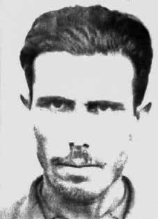

Silvano
Soares
dos Santos
CIRCUNSTÂNCIAS DA MORTE
Silvano Soares dos Santos morreu em sua casa anos depois de ter sofrido prisões e torturas em função de sua participação na chamada Guerrilha de Três Passos (RS), movimento de oposição ao regime militar liderado pelo ex-coronel Jefferson Cardim Osório, em março de 1965. Os jornais da época registram que a ação e o financiamento da guerrilha foram coordenados por militantes brasileiros exilados no Uruguai e na Bolívia, como o ex-deputado Leonel Brizola, que teria recebido apoio de Cuba na organização da operação armada. De acordo com as audiências recentes da CNV sobre a Operação Três Passos, realizada na cidade gaúcha com o mesmo nome, o MR-26 era constituído por um grupo de militantes nacionalistas, entre eles muitos ex-militares. Cardim deixou o exílio no Uruguai e numa operação que teve a participação de cerca de 40 militantes, ocupou os quartéis da Brigada Militar das cidades de Três Passos, Tenente Portela e Frederico Westphallen, na fronteira com a Argentina. O Jornal do Brasil do dia 27 de março de 1965 relata que a ação resultou no roubo de um fuzilmetralhadora, de outros 30 fuzis e cerca de 600 cartuchos, sendo, em seguida, redirecionada para Santa Catarina. O informativo secreto sobre esse grupo de guerrilheiros, elaborado pelo órgão de informação da Aeronáutica em abril de 1965, reforça a perspectiva de que os guerrilheiros tiveram sucesso ao ocupar a sede da Brigada Militar, pois foram presos com fuzis, mosquetões, carabina, revólveres, pistola, munições, além de uniformes do Exército e máquina de escrever. No dia 26 de março, em visita ao município de Foz do Iguaçu (PR) para a inauguração da “Ponte da Amizade” entre o Brasil e o Paraguai, o presidente Castelo Branco foi acompanhado por aviões da FAB, que percorreram a região em busca do grupo insurgente. O cerco ao grupo começou em Leônidas Marques (PR) com a eclosão de um tiroteio entre as forças militares e os guerrilheiros. A partir disso, o grupo se dispersou e, pouco a pouco, seus homens foram capturados, torturados e mortos. A certidão de óbito de Silvano Soares indica “caquexia” como causa da morte, síndrome gerada por múltiplos fatores e que se caracteriza pela perda de peso, atrofia muscular, fadiga, atingindo, na maioria dos casos, pacientes com insuficiência cardíaca ou renal e pacientes com câncer terminal. No entanto, os depoimentos da esposa do militante e de seus amigos testemunham que a morte de Silvano decorreu das torturas sofridas nas prisões, que provocaram internações psiquiátricas e, por fim, um derrame. A esposa de Silvano, Constância dos Santos, contou que o marido perdeu a memória em razão das torturas sofridas no Batalhão em 1965. Em 13 de março de 1997, ela declarou à CEMDP que Silvano foi levado cinco vezes ao Hospital Psiquiátrico de Porto Alegre, mas seu estado de saúde se agravava cada vez mais. Após sua última prisão, foi internado no Hospital Psiquiátrico Adauto Botelho. Depois disso, Silvano teria abandonado a família para viver só num casebre em Sede Nova (RS), onde, em meados de junho de 1970, veio a falecer em completo abandono. O requerimento encaminhado à Comissão de Anistia por seus familiares informa que Silvano ficou preso de 28/3 a 17/5 de 1965 em Foz do Iguaçu (PR); de 17/5 a 4/6 de 1966 em Porto Alegre (RS); de dezembro de 1966 a 7/7 de 1967 na prisão Provisória de Curitiba (PR), onde foi julgado e absolvido na Auditoria da 5a Região Militar. Seus problemas psíquicos tiveram início após a primeira prisão e se agravaram posteriormente. Segundo o delegado de polícia de Campo Novo (RS), Saul Macedo de Almeida, depois de ter sido preso no Paraná, Silvano Soares dos Santos voltou à região uns três meses depois, sofrendo das “faculdades mentais”. Ele confirmou que o militante teria sido preso várias vezes. Conforme a declaração de Valdetar Antônio Dorneles, integrante do mesmo grupo guerrilheiro, Silvano Soares dos Santos teria feito parte de um grupo de 10 homens que se apresentou às Forças Regulares, sendo amarrado numa carroceria de caminhão e levado ao 1o Batalhão de Fronteira de Foz do Iguaçu. Os presos foram então […] pendurados nas grades da prisão, pegados pela nuca e batidos contra os alicerces da parede, pelo que atribuímos as consequências da debilidade mental […] que no outro dia amanheceu rodeando as paredes sem falar com ninguém, perdeu (a memória), corria muito sangue das suas narinas e nunca mais disse coisa com coisa. De acordo com o mesmo relato, o militante foi posto em liberdade em Porto Alegre, voltou à sua residência, mas não conseguiu mais se adaptar nem ao trabalho como agricultor, nem à sua família. Foi novamente preso, internado em hospital psiquiátrico e submetido à perícia neuropsiquiátrica. Voltou para casa, não se adaptou mais ao convívio social e no dia 25 de junho de 1970 foi encontrado morto, já com o corpo endurecido. Outras declarações de amigos e conhecidos de Silvano à CEMDP, como a de Abrão Antônio Dorneles, João Soares de Lima, Homero Fernandes Flores e João Batista Figueira, endossaram essas informações. Também é importante considerar que o registro de ocorrência emitido pela Polícia Civil em 24 de junho de 1970 afirma que a morte se deu sem qualquer assistência médica no dia anterior ao registrado na certidão de óbito, de forma que não é possível saber exatamente o dia em que Silvano faleceu. O corpo de Silvano Soares dos Santos foi enterrado em um cemitério em Sede Nova, no município de Humaitá (RS).
Silvano Soares dos Santos died in his home years after having suffered arrest and torture due to his participation in the so-called Guerrilha de Três Passos (RS), a movement opposing the military regime led by former colonel Jefferson Cardim Osório, in March 1965. Newspapers at the time record that the action and financing of the guerrilla were coordinated by Brazilian militants exiled in Uruguay and Bolivia, such as former deputy Leonel Brizola, which would have received support from Cuba in organizing the armed operation. According to recent CNV hearings on Operation Três Passos, held in the city of Rio Grande do Sul with the same name, the MR-26 was made up of a group of nationalist militants, including many former military personnel. Cardim left exile in Uruguay and in an operation involving around 40 militants, occupied the Military Brigade barracks in the cities of Três Passos, Tenente Portela and Frederico Westphallen, on the border with Argentina. Jornal do Brasil on March 27, 1965 reports that the action resulted in the theft of a machine gun, 30 other rifles and around 600 cartridges, which were then redirected to Santa Catarina. The secret information about this group of guerrillas, prepared by the Air Force information body in April 1965, reinforces the perspective that the guerrillas were successful in occupying the headquarters of the Military Brigade, as they were arrested with rifles, carabiners, carbines, revolvers, pistols, ammunition, as well as Army uniforms and a typewriter. On March 26, on a visit to the municipality of Foz do Iguaçu (PR) for the inauguration of the “Friendship Bridge” between Brazil and Paraguay, President Castelo Branco was accompanied by FAB planes, which traveled the region in search of the insurgent group. The siege of the group began in Leônidas Marques (PR) with the outbreak of a shootout between the military forces and the guerrillas. After that, the group dispersed and, little by little, its men were captured, tortured and killed. Silvano Soares' death certificate indicates “cachexia” as the cause of death, a syndrome generated by multiple factors and characterized by weight loss, muscular atrophy, fatigue, affecting, in most cases, patients with heart or kidney failure and patients with terminal cancer. However, the testimonies of the activist's wife and his friends testify that Silvano's death resulted from the torture suffered in prisons, which led to psychiatric hospitalizations and, finally, a stroke. Silvano's wife, Constância dos Santos, said that her husband lost his memory due to the torture suffered in the Battalion in 1965. On March 13, 1997, she told CEMDP that Silvano was taken five times to the Porto Alegre Psychiatric Hospital, but his health condition became increasingly worse. After his last arrest, he was admitted to the Adauto Botelho Psychiatric Hospital. After that, Silvano allegedly abandoned his family to live alone in a shack in Sede Nova (RS), where, in mid-June 1970, he died in complete abandonment. The application sent to the Amnesty Commission by his family states that Silvano was imprisoned from 3/28 to 5/17, 1965 in Foz do Iguaçu (PR); from 17/5 to 4/6 1966 in Porto Alegre (RS); from December 1966 to 7/7 1967 in the Provisional prison of Curitiba (PR), where he was tried and acquitted in the Audit of the 5th Military Region. His mental problems began after his first arrest and worsened later. According to the police chief of Campo Novo (RS), Saul Macedo de Almeida, after being arrested in Paraná, Silvano Soares dos Santos returned to the region about three months later, suffering from “mental illnesses”. He confirmed that the militant had been arrested several times. According to the statement by Valdetar Antônio Dorneles, a member of the same guerrilla group, Silvano Soares dos Santos would have been part of a group of 10 men who presented themselves to the Regular Forces, being tied to a truck body and taken to the 1st Border Battalion of Foz do Iguaçu. The prisoners were then [...] hung from the prison bars, grabbed by the back of the head and beaten against the foundations of the wall, for which we attribute the consequences to mental weakness [...] that the next day he woke up surrounding the walls without speaking to anyone, he lost (his memory), there was a lot of blood running from his nostrils and he never said anything again. According to the same report, the militant was released in Porto Alegre, returned to his home, but was no longer able to adapt to his work as a farmer, nor to his family. He was arrested again, admitted to a psychiatric hospital and subjected to neuropsychiatric examination. He returned home, no longer adapted to social life and on June 25, 1970, he was found dead, his body already stiff. Other statements by Silvano's friends and acquaintances to CEMDP, such as those by Abrão Antônio Dorneles, João Soares de Lima, Homero Fernandes Flores and João Batista Figueira, endorsed this information. It is also important to consider that the incident record issued by the Civil Police on June 24, 1970 states that the death occurred without any medical assistance the day before that recorded on the death certificate, so it is not possible to know exactly the day on which Silvano died. The body of Silvano Soares dos Santos was buried in a cemetery in Sede Nova, in the municipality of Humaitá (RS).
Silvano Soares dos Santos murió en su casa años después de haber sufrido arresto y torturas por su participación en la llamada Guerrilha de Três Passos (RS), movimiento de oposición al régimen militar encabezado por el ex coronel Jefferson Cardim Osório, en marzo de 1965. Los periódicos de la época registran que la acción y el financiamiento de la guerrilla fueron coordinados por militantes brasileños exiliados en Uruguay y Bolivia, como el ex diputado Leonel Brizola, que habría recibido apoyo de Cuba en organizando la operación armada. Según recientes audiencias de la CNV sobre la Operación Três Passos, celebrada en la ciudad homónima de Rio Grande do Sul, el MR-26 estaba formado por un grupo de militantes nacionalistas, entre ellos muchos ex militares. Cardim abandonó el exilio en Uruguay y, en una operación en la que participaron unos 40 militantes, ocupó los cuarteles de la Brigada Militar en las ciudades de Três Passos, Tenente Portela y Frederico Westphallen, en la frontera con Argentina. El Jornal do Brasil del 27 de marzo de 1965 informa que la acción resultó en el robo de una ametralladora, otros 30 rifles y alrededor de 600 cartuchos, que luego fueron redirigidos a Santa Catarina. La información secreta sobre este grupo de guerrilleros, elaborada por el organismo de información de la Fuerza Aérea en abril de 1965, refuerza la perspectiva de que los guerrilleros lograron ocupar el cuartel general de la Brigada Militar, pues fueron detenidos con fusiles, mosquetones, carabinas, revólveres, pistolas, municiones, además de uniformes del Ejército y una máquina de escribir. El 26 de marzo, en visita al municipio de Foz do Iguaçu (PR) para la inauguración del “Puente de la Amistad” entre Brasil y Paraguay, el presidente Castelo Branco estuvo acompañado de aviones de la FAB, que recorrieron la región en busca del grupo insurgente. El asedio al grupo comenzó en Leônidas Marques (PR) con el estallido de un tiroteo entre fuerzas militares y guerrilleros. Posteriormente, el grupo se dispersó y, poco a poco, sus hombres fueron capturados, torturados y asesinados. El certificado de defunción de Silvano Soares señala como causa de la muerte “caquexia”, un síndrome generado por múltiples factores y caracterizado por pérdida de peso, atrofia muscular, fatiga, que afecta, en la mayoría de los casos, a pacientes con insuficiencia cardíaca o renal y a pacientes con cáncer terminal. Sin embargo, los testimonios de la esposa del activista y de sus amigos atestiguan que la muerte de Silvano fue el resultado de las torturas sufridas en las cárceles, que derivaron en hospitalizaciones psiquiátricas y, finalmente, en un derrame cerebral. La esposa de Silvano, Constância dos Santos, dijo que su marido perdió la memoria debido a las torturas sufridas en el Batallón en 1965. El 13 de marzo de 1997, dijo al CEMDP que Silvano fue llevado cinco veces al Hospital Psiquiátrico de Porto Alegre, pero su estado de salud empeoró cada vez más. Tras su última detención, ingresó en el Hospital Psiquiátrico Adauto Botelho. Posteriormente, Silvano habría abandonado a su familia para vivir solo en una choza en Sede Nova (RS), donde, a mediados de junio de 1970, murió en completo abandono. La solicitud enviada a la Comisión de Amnistía por sus familiares afirma que Silvano estuvo preso del 28/3 al 17/5 de 1965 en Foz do Iguaçu (PR); del 17/5 al 4/6 de 1966 en Porto Alegre (RS); de diciembre de 1966 al 7/7 de 1967 en la Prisión Provisional de Curitiba (PR), donde fue juzgado y absuelto en la Auditoría de la V Región Militar. Sus problemas mentales comenzaron después de su primer arresto y empeoraron más tarde. Según el jefe de policía de Campo Novo (RS), Saúl Macedo de Almeida, después de ser detenido en Paraná, Silvano Soares dos Santos regresó a la región unos tres meses después, padeciendo “enfermedades mentales”. Confirmó que el militante había sido detenido varias veces. Según declaración de Valdetar Antônio Dorneles, integrante del mismo grupo guerrillero, Silvano Soares dos Santos habría formado parte de un grupo de 10 hombres que se presentaron ante las Fuerzas Regulares, siendo atados a la carrocería de un camión y llevados al 1.er Batallón Fronterizo de Foz do Iguaçu. Luego los prisioneros fueron [...] colgados de los barrotes de la prisión, agarrados por la nuca y golpeados contra los cimientos del muro, lo cual atribuimos las consecuencias a debilidad mental [...] que al día siguiente amaneció rodeado de los muros sin hablar con nadie, perdió (la memoria), le corría mucha sangre por las fosas nasales y no volvió a decir nada. Según el mismo informe, el militante fue liberado en Porto Alegre, regresó a su casa, pero ya no pudo adaptarse a su trabajo como agricultor ni a su familia. Fue arrestado nuevamente, ingresado en un hospital psiquiátrico y sometido a un examen neuropsiquiátrico. Regresó a casa, ya no adaptado a la vida social y el 25 de junio de 1970 fue encontrado muerto, con el cuerpo ya rígido. Otras declaraciones de amigos y conocidos de Silvano al CEMDP, como las de Abrão Antônio Dorneles, João Soares de Lima, Homero Fernandes Flores y João Batista Figueira, avalaron esta información. También es importante considerar que el acta de incidente emitida por la Policía Civil el 24 de junio de 1970 señala que la muerte se produjo sin asistencia médica alguna el día anterior al que consta en el acta de defunción, por lo que no es posible saber con exactitud el día en que falleció Silvano. El cuerpo de Silvano Soares dos Santos fue enterrado en un cementerio de la Sede Nova, en el municipio de Humaitá (RS).